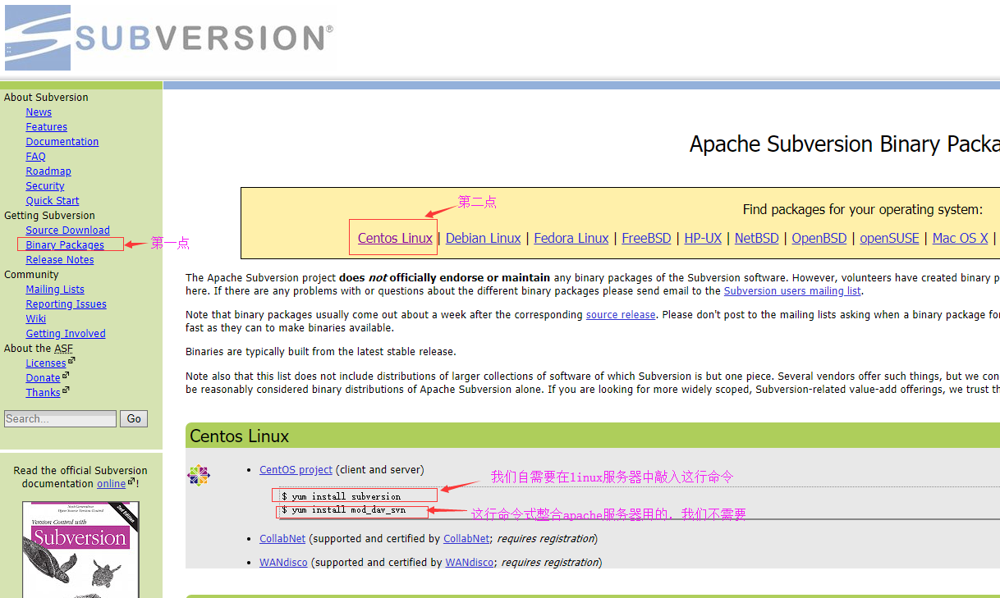

Linux服务器中安装svn
按照官网的说法，在Linux服务器中安装svn特别简单，只需要一行命令：yum install subversion就可以了

为了在安装过程中提示信息出现的时候都默认为yes（即不想提示信息弹出来），我们加上-y参数，安装svn的命令变为：yum -y install subversion
安装完成后我们输入命令：svn --version来验证是否安装成功，如果出现如下信息则代表安装成功了

在svn安装成功之后，启动svn服务之前，还要创建一个存放所有的版本库的总目录
版本库可以有多个，比如做erp项目的时候我们创建一个版本库，做oa项目的时候我们在创建一个版本库，不过这些所有的版本库要存放在一个总的目录下，方便管理
这个总的目录我们这里创建为/var/svn/repository，运行的命令为mkdir -p /var/svn/repository
配置svn服务信息
修改/etc/init.d目录下的svnserve脚本文件如下：
配置svn服务开机自启动
运行命令：chkconfig svnserve on
重启服务器后验证svn的服务是否已经启动了
重启服务器后运行命令：service svnserve status
看到下面信息说明svn服务已经启动了：
配置防火墙放行svn服务端口号
修改/etc/sysconfig目录下的iptables文件为：

重启防火墙服务
运行命令：service iptables restart